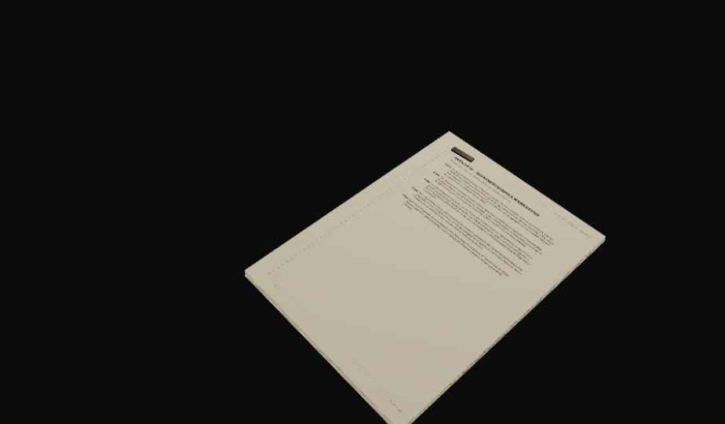
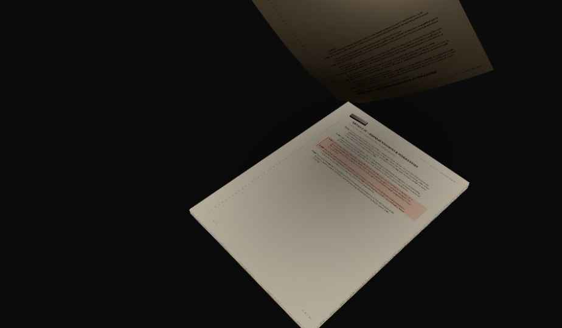

Big foreground dossier — the page-flip trade-off
AT REST ✓ large & clean
MID-FLIP ✕ top sliced off
At this size the resting dossier is exactly the heavy foreground object you want — but the 270° page-flip rears up one full page-length and the canvas top clips it (~194px). Bigger stack = taller flip = more clip. See chat for the three ways forward.